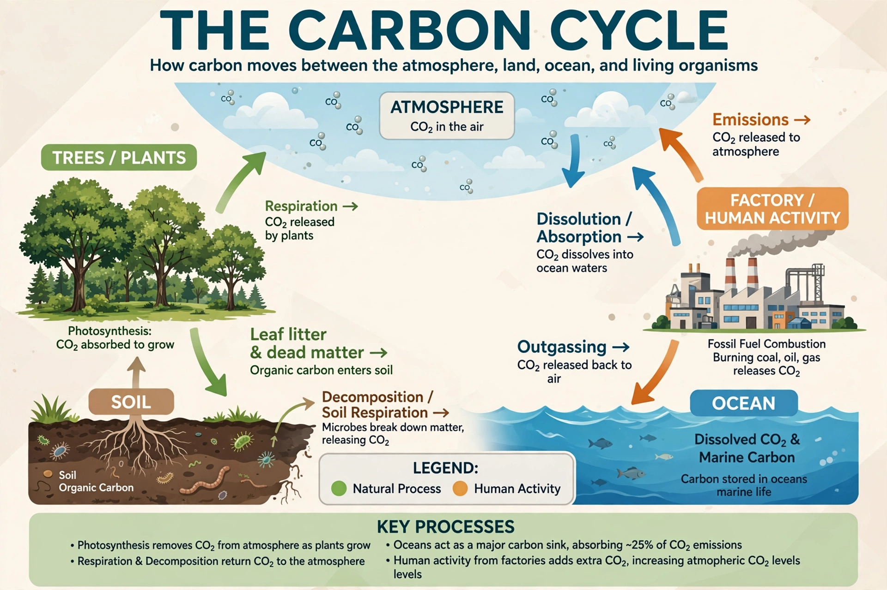
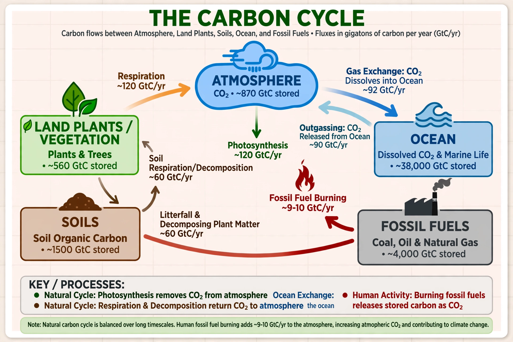

Carbon cycle


The carbon cycle is the biogeochemical cycle by which carbon is exchanged among the atmosphere, oceans, soils, living organisms and rocks. It regulates Earth's climate over both short and geological timescales and is being profoundly altered by human activity.
Carbon is stored in reservoirs of vastly different sizes: the deep ocean holds the most carbon of the active reservoirs, soils hold more than the atmosphere and vegetation combined, and sedimentary rocks dwarf all the rest.
Fast and slow cycles
In the fast (biological) cycle, photosynthesis draws roughly 120 billion tonnes of carbon per year from the atmosphere into land plants, with a nearly equal amount returned by respiration and decay. The ocean exchanges a comparably large flux with the atmosphere through gas exchange and marine photosynthesis.
The slow (geological) cycle moves carbon through weathering of rocks, burial of sediments, and volcanic and metamorphic outgassing over hundreds of millions of years. Chemical weathering of silicate rocks acts as a long-term thermostat: warmer, wetter conditions speed weathering and draw down CO₂.
Human perturbation
Burning fossil fuels transfers carbon from geological storage to the atmosphere at roughly ten billion tonnes of carbon per year — fast by geological standards. Land-use change adds more. About half of the emitted CO₂ remains airborne; the ocean takes up much of the rest, causing Ocean acidification, and land ecosystems absorb a further share.
The airborne fraction and the strength of the land and ocean sinks are central uncertainties in projecting future Climate change; weakening sinks or releases from thawing Permafrost would amplify warming.
Feedbacks
The carbon cycle contains feedbacks that can amplify or damp climate change: warming soils respire faster, droughts reduce plant uptake, and thawing permafrost releases carbon dioxide and methane. Conversely, CO₂ fertilisation and longer growing seasons can increase plant growth where nutrients and water allow.
See also: Climate change · Greenhouse effect · Ocean acidification · Water cycle · Nitrogen cycle · Permafrost